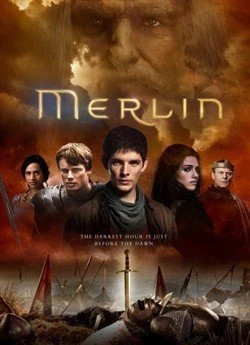
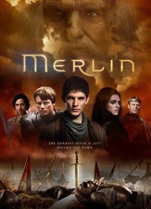

Мерлін
«Мерлін» — британський серіал про молодого чарівника, якому судилося допомогти Артуру стати легендарним королем Камелоту. Магія у світі Камелота заборонена, тож Мерлін має приховувати свої здібності.
«Мерлін» — британський серіал про молодого чарівника, якому судилося допомогти Артуру стати легендарним королем Камелоту. Магія у світі Камелота заборонена, тож Мерлін має приховувати свої здібності.
